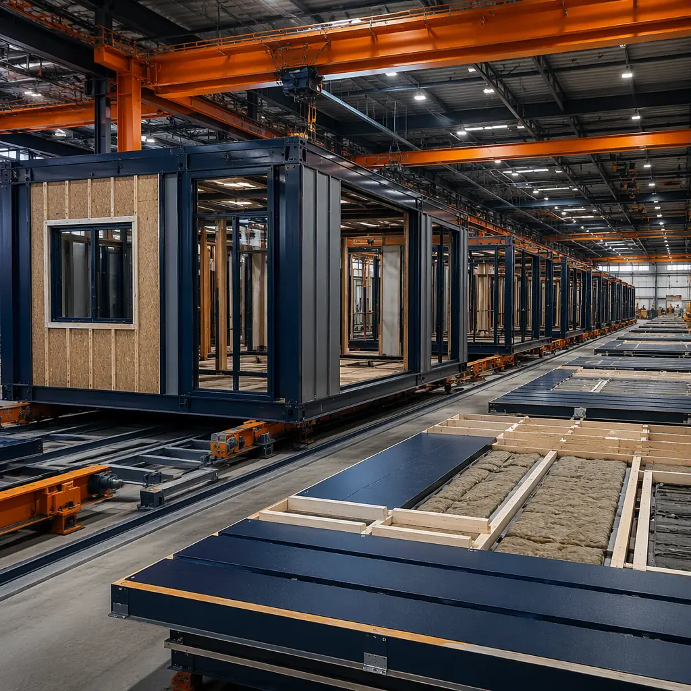
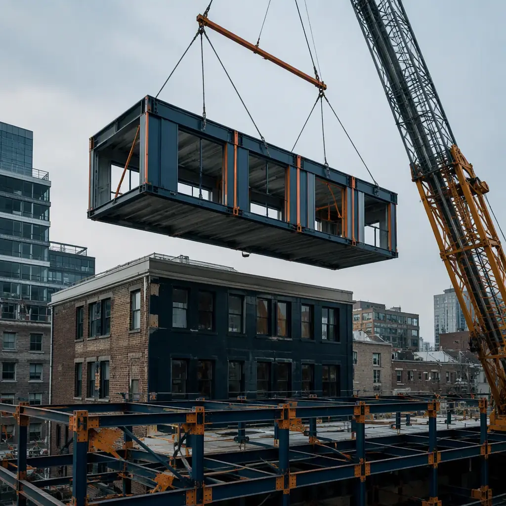

Every developer has a site they wish they could build on but cannot figure out how. It might be a former industrial parcel hemmed in by active rail lines on two sides and a six-lane arterial on the third, with soil contamination that makes traditional excavation prohibitively expensive. It might be a narrow urban infill lot sandwiched between occupied buildings, where the only access is a single-lane alley that a concrete truck cannot navigate. It might be a sloping hillside where the cost of terracing and retaining walls consumes the project's entire contingency before the foundation is poured. These are the sites that conventional construction writes off as uneconomical, leaving them vacant for decades while developers chase greenfield parcels further from the urban core. Modular construction changes the arithmetic on these sites fundamentally — not by making the challenges disappear, but by moving the construction activity to a place where those challenges do not exist.
![Aerial view of tight urban brownfield construction site with modular prefabricated building units being craned into position, narrow site sandwiched between existing buildings, just-in-time module delivery on flatbed truck navigating constrained access road, steel frame modules with clean geometric facade and pre-installed windows, module seams visible, factory-assembled units arriving complete, dark navy and warm steel orange brand accents on building exterior, professional construction photography](../generated/brownfield-modular-hero.webp)
The Mathematics of Site Constraint — Why 90% of Construction Hours Don't Need to Happen on Site
On a typical mid-rise commercial project built with conventional methods, approximately 90% of total construction labor hours are expended on site. Carpenters frame interior partitions on site. Electricians pull wire through studs on site. Drywall crews hang, tape, and sand on site. Painters spray on site. Every one of these workers needs a place to park, a place to store materials, a path to walk from the material storage area to the work face, and enough clear floor area around their work face to operate safely. On a greenfield site with unlimited laydown area, these requirements are met with a few acres of gravel and some temporary fencing. On a constrained urban site where the building footprint occupies 90% of the parcel, there is literally nowhere for these activities to happen except inside the building that is being constructed — which means every trade is fighting for the same 10% of leftover space, and the schedule inflates accordingly.
Modular construction solves this by relocating 85–95% of total labor hours to a factory. The factory floor has unlimited material storage, overhead cranes that eliminate the need for mobile equipment, climate-controlled workstations with task lighting and power at every position, and a production line layout that sequences trades in the optimal order without spatial conflict. When a module arrives at the constrained urban site, it is not a kit of parts that requires weeks of assembly — it is a completed room with walls painted, flooring installed, electrical outlets live, and plumbing stubbed to the module connection point. The site crew's job is reduced to four activities: crane the module into position, bolt it to its neighbors, connect the MEP services at the module interface, and weather-seal the roof. A 50-module project that would require 12–16 months of continuous site activity with conventional construction can be installed in 8–12 weeks of site activity with modular, reducing the site's exposure to access constraints, parking shortages, and neighbor complaints by 75–85%.

Brownfield Contamination — Why Modular Reduces Remediation Costs
Brownfield sites carry the legacy of previous industrial use: petroleum hydrocarbons, heavy metals, chlorinated solvents, asbestos in demolished building debris. Conventional construction on these sites requires extensive soil remediation before building can begin — excavation of contaminated soil, off-site disposal at a licensed facility, backfill with certified clean fill, and installation of vapor intrusion barriers beneath the building slab. On a 5,000 m² brownfield parcel with contamination to a depth of 3 meters, the remediation alone can cost $1.5–3 million and take 4–8 months before any building work starts. This is the sunk cost that makes many brownfield projects financially non-viable: the developer must fund the remediation before generating any revenue from the building.
Modular construction attacks this problem from two directions simultaneously. First, the building's foundation requirements on a brownfield site are typically limited to a grid of pier foundations or a reinforced concrete raft slab — a scope of work that takes 4–8 weeks on site and disturbs soil only at the specific pier locations rather than across the entire building footprint. The modules themselves are built in the factory concurrently with the site foundation work, so the building is being manufactured while the foundation is being poured, rather than waiting for foundation completion to begin. Second, because the modules arrive as completed building sections with factory-installed vapor barriers at the floor assembly, the building's protection against soil vapor intrusion is integrated into the module design rather than applied as a separate site operation. The factory QC process verifies the vapor barrier continuity before the module leaves the factory floor; the site crew verifies continuity at the module-to-module joints during installation. This dual-site approach — factory manufacturing overlapping with site foundation work — compresses the total project timeline on a brownfield site from 18–24 months (conventional) to 10–14 months (modular), and the compressed schedule is what makes the pro forma work: the building starts generating revenue 8–10 months earlier, offsetting the remediation cost through earlier income rather than through lower construction cost. For developers navigating the regulatory complexity of brownfield redevelopment, modular construction permitting and zoning guidance can accelerate the entitlements phase that often represents the longest lead time on brownfield projects.
Logistics on Constrained Sites — Just-in-Time Delivery vs Continuous Supply Chain
A conventional construction site on a constrained urban parcel functions as a continuous material supply chain: trucks deliver rebar, formwork, concrete, steel studs, drywall, ductwork, conduit, and finish materials on a daily or near-daily basis throughout the 12–18 month construction period. Each delivery requires a staging area where materials wait until the trade that will install them is ready. On a 500 m² building footprint with zero laydown area, this means materials stack up in the street, on the sidewalk, in rented containers parked in adjacent lots — each adding cost, complexity, and friction with municipal authorities and neighboring property owners.
The modular site operates on a fundamentally different logistics model. Module deliveries are scheduled and sequenced: the modules for a given floor arrive on the day they will be installed, are lifted directly from the flatbed truck to their final position by the site crane, and require zero on-site storage. The total number of truck deliveries for a 50-module project is approximately 55–65 (50 module deliveries plus 5–15 for MEP connection materials, roofing, and exterior finishing at module joints), compared to 300–500 deliveries for a conventional project of equivalent size. The site crane is mobilized for 2–3 days per floor rather than being on site continuously for the structural erection phase. For developers who have managed modular building transportation and logistics, the just-in-time delivery model on constrained urban sites is not an additional complication — it is the standard operating procedure that modular has already perfected for every project, regardless of site conditions.
Noise, Dust, and Neighbor Relations — The Social License to Build
In dense urban environments, construction noise and dust are not merely inconveniences — they are regulatory compliance issues that can stop work entirely. Most cities enforce construction noise ordinances that limit work to 7:00 AM–6:00 PM on weekdays, with stricter limits or outright prohibitions on weekends. Some jurisdictions require real-time noise monitoring with automatic shutdown when decibel thresholds are exceeded. Dust suppression requirements can mandate continuous water misting during dry conditions, adding water trucks and hose crews to an already congested site. Each of these restrictions reduces the effective working hours per day and the productive output per hour, extending the schedule and increasing the general conditions cost.
Modular construction eliminates the noisiest, dustiest construction activities from the site entirely. There is no concrete mixer idling at the curb. No compressor running pneumatic nail guns for weeks of framing. No drywall sanding generating fine particulate dust that settles on neighboring properties. The site activities — crane lifts, bolt-up connections, and MEP tie-ins — are among the quietest operations in construction, and the total duration of site activity is compressed by 75–85% as described above. For a developer building on a site that abuts occupied residential buildings, a hospital, or a school — where construction disruption can trigger complaints that escalate to stop-work orders — the modular approach can be the difference between a project that proceeds smoothly and one that gets tied up in months of dispute resolution. The same logic applies to projects in areas with strict environmental impact assessment requirements, where the reduced site duration and reduced vehicle movements can simplify the approval process significantly. Developers evaluating modular construction partners should ask for data on site vehicle movements and site labor hours from comparable completed projects to quantify the neighbor-relations advantage.

Foundation Strategy for Difficult Ground — Doing More with Less Excavation
Difficult ground conditions — high water tables, expansive clays, uncontrolled fill, near-surface bedrock — are disproportionately expensive for conventional construction because the foundation must support a building that will be assembled on top of it over many months, during which time any differential settlement will telegraph through the partially completed structure and compound as additional floors are added. The conventional response to poor ground is deeper foundations and more extensive ground improvement, both of which require heavy equipment access, soil disposal, and extended site work.
Modular buildings, by contrast, impose a different set of demands on the foundation. Because each module is a rigid steel box with its own structural integrity, the foundation needs to provide level bearing at discrete points (the module corner connections) rather than continuous support along load-bearing walls. This lends itself to a pier-and-grade-beam foundation system where deep foundations are installed at specific locations while the intervening ground is left undisturbed. On a site with 2 m of uncontrolled fill overlying competent bearing strata, a conventional shallow foundation would require removal and replacement of the fill across the entire footprint; a modular pier foundation requires removal only at the pier locations, reducing the excavation volume by 70–85%. The cost savings from reduced excavation, reduced soil disposal, and reduced imported fill can reach $15–25 per square foot of building area on difficult sites — a significant fraction of the total modular cost premium that developers sometimes cite as a barrier to modular adoption. For projects where soil conditions are the primary cost driver, foundation systems for modular buildings can convert a site that conventional methods would classify as uneconomical into one where modular makes the project viable.
Case Pattern: Urban Infill Multi-Family on a 0.3-Acre Parcel
| Project Parameter | Conventional Construction | Modular Construction |
|---|---|---|
| Building program | 24-unit apartment, 4 stories, 20,000 sq ft | 24-unit apartment, 4 stories, 20,000 sq ft |
| Site dimensions | 40 ft × 130 ft, zero laydown, alley access only | 40 ft × 130 ft, zero laydown, alley access only |
| Site activity duration | 14–16 months | 10–12 weeks (module installation) + 4 weeks foundation = 14–16 weeks total site work |
| Total project timeline (incl. factory) | 14–16 months | 8–10 months (factory + site overlap) |
| Truck deliveries to site | 250–400 | 30–40 (24 modules + MEP + finishing) |
| Construction noise complaints (estimated) | 15–30 (extended multi-trade activity) | 2–5 (crane days only, limited site crew) |
| Parking/staging cost | $60,000–90,000 (rented adjacent lot, daily worker parking) | $8,000–15,000 (crane mobilization, minimal crew parking) |
The case pattern above is not hypothetical. It represents the median outcome from multiple completed modular urban infill projects where developers chose modular specifically because the site constraints made conventional construction logistically impossible. The 6–8 month earlier revenue start date, combined with the avoided costs of material storage, worker parking, and neighbor dispute resolution, consistently produces a total project cost 10–20% below the conventional estimate on constrained sites — reversing the modular cost premium that developers sometimes assume based on greenfield project data. For reference data from completed projects, modular apartments developer case studies provide detailed cost and schedule comparisons across site types.
A difficult site is not an argument against modular construction — it is the strongest argument for it. The worse the site access, the tighter the laydown area, the more hostile the ground conditions, the larger the advantage of building 90% of the project inside a factory and delivering it to the site as completed modules. Modular does not make bad sites good — it makes bad sites buildable.